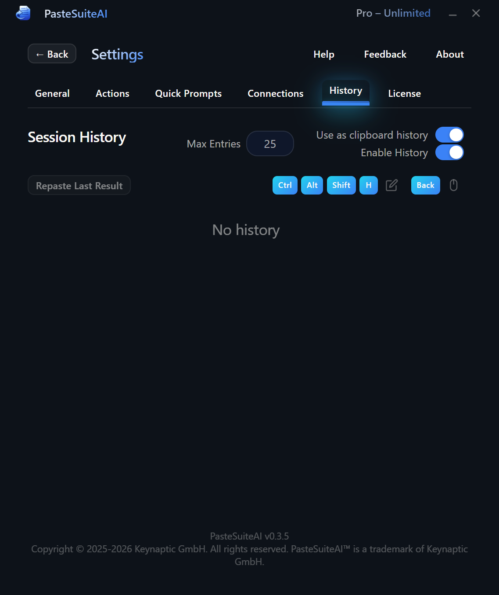

Clipboard History
Automatically capture and rerun text, images, and audio from your clipboard
Overview
PasteSuiteAI automatically tracks clipboard changes and records the inputs and outputs of every action you run. History is stored in memory and cleared on app restart — nothing is written to disk. Entries cover text, images, and audio from both the system clipboard and AI action results.
The history panel lives in Settings › History. Entries appear in reverse-chronological order. Click any entry to copy its content back to the clipboard.

Enabling History
Two independent toggles control what gets recorded. Both are on by default.
| Toggle | What it records | Default |
|---|---|---|
| Session History | Inputs and outputs of every action you run (AI transforms, STT, regex, etc.) | On |
| Clipboard History | External clipboard changes — anything you copy from other applications | On |
History Settings
The controls at the top of the History tab let you adjust capacity and toggle each recording mode.
| Control | Type | Description |
|---|---|---|
| Max Entries | Number input (1–999) | Maximum entries kept in memory. Default: 25. Oldest entries are discarded first when the limit is reached. Press Enter or click away to apply. |
| Clipboard History Enabled | Toggle | Records changes from the system clipboard (external copies). Default: on. |
| Session History Enabled | Toggle | Records action inputs and outputs. Default: on. |
Using History Entries
Click the content area of any entry to copy it back to the clipboard. A brief Copied badge confirms the action.
Text entries
Click the text preview to copy the full text to the clipboard. The preview is truncated to 200 characters for display; the full content is always what gets copied.
For action entries, you will see separate clickable rows for the Input and the Output. Click either row independently to copy that specific value.
Image entries
Click the thumbnail to copy the image back to the clipboard. A scaled-down thumbnail is displayed in the list; the full-resolution image is what gets copied, not the thumbnail.
Audio entries
Audio entries recorded by speech-to-text (STT) actions include an inline audio player so you can listen back. Two additional controls let you rerun the audio through the current speech-to-text connection:
| Control | Description |
|---|---|
| Transcribe / Instruct mode toggle | Selects the processing mode before hitting Rerun. Transcribe processes the audio through speech-to-text and pastes the result. Instruct sends the audio as an instruction input to the configured AI model. The default matches the mode the entry was originally recorded with. |
| Rerun button | Re-processes the stored audio using the selected mode and the active STT connection. Useful for re-running an old recording with a different model or prompt. |
History Entry Details
Each entry header shows:
- Action name — the action that produced the entry, or “Clipboard” for raw clipboard snapshots.
- Timestamp — when the entry was recorded.
- Duration — how long the action took (action entries only).
- Model ID — the AI model used (action entries only).
- Token counts — prompt + completion = total tokens, when the provider reports them.
Entries that are part of an action chain are visually grouped together and display a Chain Step N or Chain Final badge.
Security
The clipboard monitor automatically skips recording any text that looks like an API key or secret token. This check runs on both the preview and the full clipboard content. If a match is detected, the entry is silently discarded and never stored.
Limitations
- Not persisted to disk. History is memory-only. Restarting the app clears all entries.
- Image history stores thumbnails. Full original image bytes are not retained beyond what is needed to copy back to the clipboard. An internal cap limits how many bytes are stored per media entry.
- Deduplication is active. Rapid clipboard changes from the same source — for example, when an application writes multiple formats at once (plain text, RTF, HTML) — are collapsed into a single entry using a 30-second deduplication window. This prevents duplicate consecutive entries from the same copy action.
- Audio and empty clipboard states are not recorded as clipboard history entries. Only text and images from the system clipboard are captured. Audio is recorded when it is the input to an STT action.